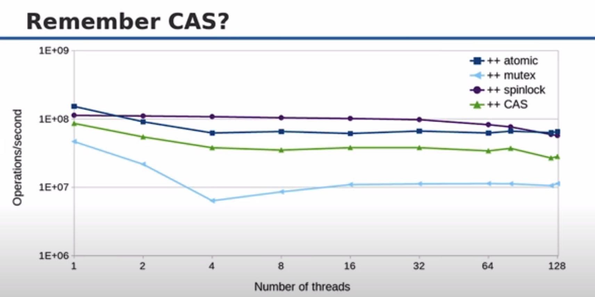
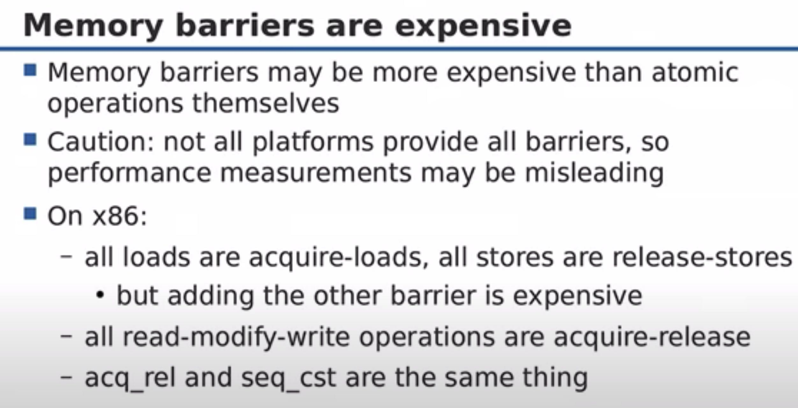
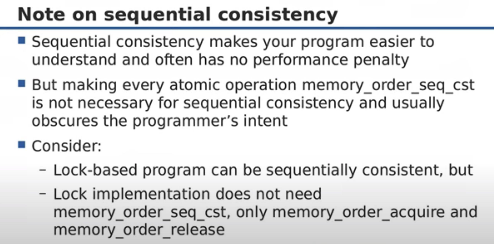

CppCon 2017: Fedor Pikus “C++ atomics, from basic to advanced. What do they really do?”
https://youtu.be/ZQFzMfHIxng?t=1571 atomic性能比CAS/mutex都要好，但是和spinlock相比在低冲突时候有优势，高冲突情况下面则没有什么优势。具体性能最好进行实测，而不是猜测。

https://youtu.be/ZQFzMfHIxng?t=1680 不是所有的atomic实现都是lock-free的，某些类型的atomic不支持lock-free. 可以通过 `is_lock_free`（运行期，准确） 和 `is_always_lock_free`（编译期，不准确） 来进行判断
https://youtu.be/ZQFzMfHIxng?t=2034 compare_exchange_strong/weak 之间的区别 差别在于double-checking之后的lock, 使用的是timed lock. 如果超时的话，那么依然返回false
https://youtu.be/ZQFzMfHIxng?t=2926 几种memory barrier/order之间的差别和使用场景，relaxed, release(rel) ,acquire(acq), rel+acq, seq_cst

